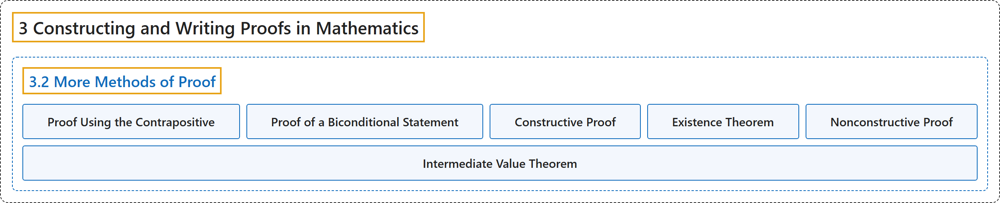

3.2 More Methods of Proof
Classification

Glossary
| Term | Definition | 中文翻译 | Source |
|---|---|---|---|
| 3 Constructing and Writing Proofs in Mathematics 构造与书写数学证明 |
(No definition) | （无定义） | Sundstrom, 2022, chapter 3 |
| 3.2 More Methods of Proof 更多证明方法 |
(No definition) | （无定义） | Sundstrom, 2022, section 3.2 |
| Proof Using the Contrapositive 逆否证明 |
"One of the most useful logical equivalencies in this regard is that a conditional statement \(P \to Q\) is logically equivalent to its contrapositive, \(\neg Q \to \neg P\text{.}\) This means that if we prove the contrapositive of the conditional statement, then we have proven the conditional statement." | 在这方面最有用的逻辑等价之一是：条件陈述 \(P \to Q\) 与它的逆否命题逻辑等价，即 \(\neg Q \to \neg P\)。这意味着如果证明了条件陈述的逆否命题，就证明了这个条件陈述。 | Sundstrom, 2022, section 3.2 |
| Proof of a Biconditional Statement 双条件陈述的证明 |
"This logical equivalency suggests one method for proving a biconditional statement written in the form “\(P\) if and only if \(Q\text{.}\)” This method is to construct separate proofs of the two conditional statements \(P \to Q\) and \(Q \to P\text{.}\)" | 这个逻辑等价给出了证明双条件陈述（写成“\(P\) 当且仅当 \(Q\)”的形式）的一种方法。这种方法就是分别证明两个条件陈述 \(P \to Q\) 和 \(Q \to P\)。 | Sundstrom, 2022, section 3.2 |
| Constructive Proof 构造性证明 |
"For a constructive proof of such a proposition, we actually name, describe, or explain how to construct some object in the universe that makes \(P( x )\) true." | 对这类命题的构造性证明，我们会实际给出名称、描述，或说明如何构造全集中使 \(P( x )\) 为真的某个对象。 | Sundstrom, 2022, section 3.2 |
| Existence Theorem 存在性定理 |
"The objective of an existence theorem is to prove that a certain mathematical object exists." | 存在性定理的目的是证明某个数学对象存在。 | Sundstrom, 2022, section 3.2 |
| Nonconstructive Proof 非构造性证明 |
"For this type of proof, we make an argument that an object in the universal set that makes \(P( x )\) true must exist but we never construct or name the object that makes \(P( x )\) true." | 这类证明论证全集中使 \(P( x )\) 为真的对象必定存在，但从不构造或指出这个对象。 | Sundstrom, 2022, section 3.2 |
| Intermediate Value Theorem 介值定理 |
"The Intermediate Value Theorem can be stated as follows: If \(f\) is a continuous function on the closed interval \(\left[ {a,b} \right]\) and if \(q\) is any real number strictly between \(f( a )\) and \(f( b )\text{,}\) then there exists a number \(c\) in the interval \(\left( {a,b} \right)\) such that \(f( c ) = q\text{.}\)" | 介值定理可以表述为：如果 \(f\) 是闭区间 \(\left[ {a,b} \right]\) 上的连续函数，并且 \(q\) 是严格介于 \(f( a )\) 与 \(f( b )\) 之间的任意实数，那么存在一个数 \(c\) 属于区间 \(\left( {a,b} \right)\)，使得 \(f( c ) = q\)。 | Sundstrom, 2022, section 3.2 |
References
Sundstrom, T. (2022). Mathematical reasoning: Writing and proof (Version 2.1; PreTeXt edition by Grand Valley State University). Retrieved October 30, 2026, from https://gvsuoer.github.io/sundstrom-textbook/frontmatter.html